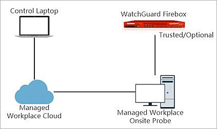

Deployment Overview
AVG Managed Workplace® is a web-based, unified dashboard that provides access to a simplified and centrally planned service delivery platform.
This document describes how to use AVG Managed Workplace to discover and monitor a WatchGuard Firebox through SNMP.
Platform and Software
The hardware and software used to complete the steps outlined in this document include:
- Firebox with Fireware v12.3.
- AVG Managed Workplace 11.4.1.97088.
- Onsite Manager downloaded from AVG Managed Workplace and installed on Microsoft Windows 10 Enterprise.
Test Topology
This diagram shows the test topology for this integration.

Set Up the Firebox
You must configure the SNMP settings on the WatchGuard Firebox before you use AVG Managed Workplace to discover it.
- Log in to Fireware Web UI (https://<your firebox IP address>:8080).
- From the navigation menu, select System > SNMP.
- In the User Name text box, type WatchGuard.
- From the Version drop-down list, select v3.
- From the Authentication Protocol drop-down list, select SHA1.
- In the Password and Confirm text boxes, type the encryption password.
- From the Privacy Protocol drop-down list, select DES.
- In the Password and Confirm text boxes, type the encryption password.

- Click Save.
- Select Firewall > Firewall Policies.
- Click Add Policy.
- From the Packet Filter drop-down list, select SNMP.
- Click Add Policy.

- Add an SNMP packet filter policy for traffic from Any-Trusted to Firebox.
If you connect to an optional interface, specify Any-Optional instead of Any-Trusted.

- Use the default settings for the other options.
- Click Save.

Set Up AVG Managed Workplace
Create a Site
- Log in to AVG Managed Workplace.

- From the navigation menu, select Site Management > Create Site.
- Type the Site Name. In our example, the site name is WatchGuardECO
- Select Apply a single Service Plan to all devices in this Site. Click Next.

- From the Service Plan Applications drop-down list, select Reactive.Click Next.

- Select Typical Deployment (Recommended). Click Next.

- Click Create.

- Download the Onsite Manager. Click Finish.

Install Onsite Manager
Install Onsite Manager on the computer you want to use to discover other devices.
Configure SNMPv3 Settings
- From the navigation menu, select Site Management > Sites.
- Click the site name. In our example, the site name is WatchGuardECO.

- Select the Credentials tab.
- Click Add.
- From the Credential Type drop-down list, select SNMPv3.
- In the User Name text box, type WatchGuard.
- From the Authentication Protocol drop-down list, select SHA.
- In the Authentication and Confirm Password text boxes, type the encryption password.
- From the Privacy Protocol drop-down list, select DES.
- In the Privacy and Confirm Password text boxes, type the encryption password.
- Click Save.
The new SNMPv3 credential appears on the Credential Sets page.


Add a New OID
- From the navigation menu, select Configuration > System Settings.
- Select the Network Objects tab.
- In the SNMP OIDs section, click Add.

- In the Object Name text box, type XTM Device Version.
- In the OID text box, type 1.3.6.1.4.1.3097.6.3.1.0.
- From the Type drop-down list, select Text. Click OK.

- In the SNMP OIDs list, confirm the XTM Device Version OID exists.

Test the Integration
- From the navigation menu, select Site Management > Sites.
- Click the site name. In our example, the site name is WatchGuardECO.
- Select the Network Discovery tab.
- Click Modify to modify the Scan Settings.
- Click Add.
- In the Scan Settings page, type the IP subnet (your target device IP subnet).

- Click Save to add the Scan Settings.
- Click Save to save the settings.
- Click Scan Now.

- When the scan is complete, from the navigation menu, select Status > Devices.
The discovered Firebox appears in the Displaying section.
- Click the device name WatchGuard-XTM.
Basic information about the WatchGuard device appears.

- Select Monitors under Management.
- Click Add Monitor.
- From the drop-down list, select SNMP. Click Add Monitor.

- In the Title text box, type XTM Device Version.
- Select the Enabled check box.
- For SNMP Counter Selection, select Existing SNMP OID.
- From the Object Name drop-down list, select XTM Device Version. This is the OID that you added previously.
- From the Polling Interval drop-down list, select 2 minute.
- From the Schedule drop-down list, select Run Always.
- Click Save.

- Repeat steps 11–20 to add two additional monitors. Add a monitor titled XTM Device Model with the Object Name sysDescr.0 and a monitor titled XTM Device Name with the Object Name sysName.0.
The added monitors appear in the Monitors section.


- Wait several minutes. From the Monitoring menu, select SNMP.
The SNMP Monitor values appears.

Appendix
About SNMP OIDs and MIBs
SNMP queries are typically formatted as a numeric expression. This is referred to as an Object Identifier (OID). An OID is a numeric reference to a unique object or piece of data.
A Management Information Base (MIB) is a database of OIDs that maps object names to a specific OID.
There are two types of MIBs: standard and enterprise. Standard MIBs are definitions of network and hardware events used by many different devices. Enterprise MIBs provide information about events that are specific to a single manufacturer.
The Firebox supports eight standard MIBs: IP-MIB, IF-MIB, TCP-MIB, UDP-MIB, SNMPv2-MIB, SNMPv2-SMI, RFC1213-MIB, and RFC1155 SMI-MIB.
For more information about Firebox Enterprise MIBs, see Enterprise MIB File Details.
Find OIDs
To get information through SNMP, you must know the OID of the object. An MIB browser is a good way to see the available MIB and OIDs. There are several free MIB browsers.
As an example, these steps describe how to use the iReasoning MIB browser:
- Install and open iReasoning.
- In the Address text box, type the IP address of your Firebox.
- Click Advanced.
- To read the MIB information for monitoring, in the Read Community text box, type public.
- From the SNMP Version drop-down list, select the SNMP version.
- From the Operations drop-down list, select Walk.
All Firebox MIBs appear in a list.